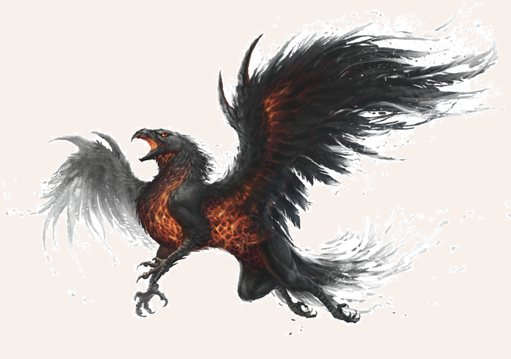

Der Irrhalk, auch Asqarath genannt, ist ein viergehörnter Dämon aus dem Gefolge Blakharaz und ähnelt einem praiosgefälligen Greifen. Allerdings sind die Federn nachtschwarz und durch seine Brust scheint eine feurige Glut, die dem Dämon ein unheimliches Äußeres verleiht. Der Irrhalk wird beschworen, um im Kampf zu dienen oder seinen Beschwörer durch die Luft zu tragen. Als Flugwesen ist der Irrhalk äußerst gefährlich und kann beim Sturzflug einen Menschen zerfetzen.

Verbreitung
Irrhalken werden beschworen und sind vornehmlich in den Schattenlanden anzutreffen.
Gelegentlich mag auch ein Beschwörer irgendwo in Aventurien Gebrauch von Irrhalken machen.
Lebensweise
Man erzählt sich, dass die Irrhalken gefallene Greifen sind, doch ob etwas an diesem Märchen dran ist, ist ungewiss.
Anders als niedere Dämonen besitzen Irrhalken eine bereits zu Beginn entwickelte Persönlichkeit und Intelligenz, was sie zu besonders gefährlichen Gegnern macht.
Irrhalk
Größe: 3 Schritt lang; 1,8 Schritt Schulterhöhe, 8 Schritt Spannweite
Eigenschaften:
MU 17
KL 12
IN 15
CH 12
FF 09
GE 18
KO 24
KK 26
LeP: 90
AsP: 45
AW: -
INI: 18+1W6
SK: 2
ZK: 3
GS: 12/36* (am Boden / in der Luft)
VW: 9
Klauen:
AT: 19
TP: 2W6+4
RW: mittel
Biss:
AT: 16
TP: 2W6+6
RW: kurz
RS/BE: 4/0
Aktionen: 2 (max. 1 x Biss, max. 2 x Klauen)
Vor- und Nachteile: Dunkelsicht II
Sonderfertigkeiten:
Sturmangriff
Talente:
Fliegen 14 (17/15/18),
Klettern 4 (17/18/26),
Körperbeherrschung 12 (18/18/24),
Kraftakt 16 (24/26/26),
Selbstbeherrschung - (gelingt automatisch),
Sinnesschärfe 4 (12/15/15),
Verbergen 2 (17/15/18),
Einschüchtern 12 (17/15/12),
Willenskraft - (gelingt automatisch)
Anzahl: 1 oder ein Schwarm von 1W6
Größenkategorie: groß
Typus: Dämon (gehörnter, Blakharaz), nicht humanoid
Kampfverhalten: Irrhalken stoßen häufig aus dem Flug auf ihr Opfer nieder und rammen es mit ihren Klauen in den Boden.
Bisweilen greifen sie sich auch ihr Opfer, heben ab und lassen es in die Tiefe stürzen.
Flucht: Irrhalken kämpfen bis zum Ende
Zauber: Dunkelheit 15, Horriphobus 6
Anrufungsschwierigkeit: -4
Beute: keine
Sonderregeln:
* Lastentransport: Irrhalken werden von manchen Dämonologen als Reittiere verwendet. Sie können im Flug bis zu 200 Stein Gewicht tragen.
| LeP-Verlust | Schmerz | |
|---|---|---|
| 68 LeP (¾) | immun gegen Schmerz | |
| 45 LeP (½) | immun gegen Schmerz | |
| 23 LeP (¼) | immun gegen Schmerz | |
| 5 LeP und weniger | immun gegen Schmerz |
| Sphärenkunde | ||
|---|---|---|
| QS1 | Als Dämonen aus dem Gefolge des Blakharaz sind sie mit dem Praios heiligen Waffen zu verletzen. Außerdem meiden sie direktes Sonnenlicht. | |
| QS2 | Der Kot der Irrhalken besteht aus alles verzehrender Glut. | |
| QS3 | Irrhalken hassen Greifen zutiefst. Kaum etwas kann sie davon abhalten, sich auf einen Greifen zu stürzen, sollten sie eines solchen ansichtig werden. |